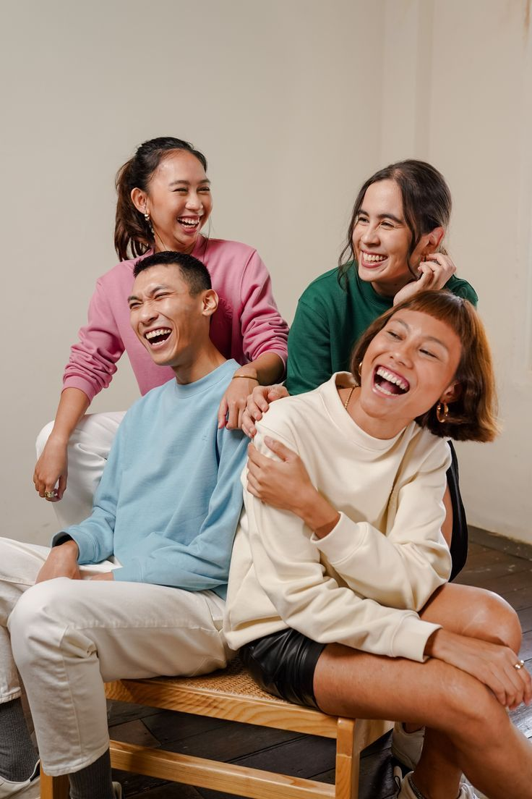
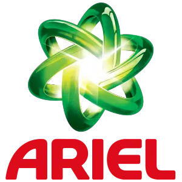
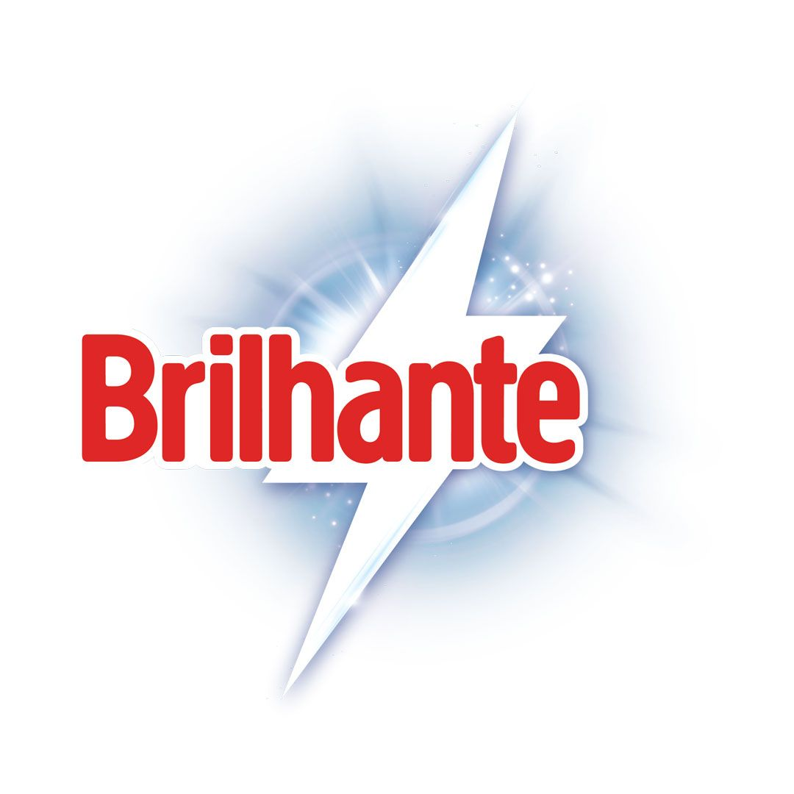
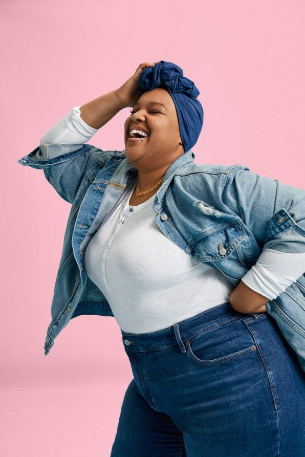

Idosos aparecem em só 5,1% das publicações, o segundo pior resultado da nossa série histórica
Lançamento · 2026
8º Estudo Diversidade na Comunicação de Marcas nas Redes Sociais
Baixe gratuitamente o estudo completo e descubra como os 20 maiores anunciantes do Brasil retratam a diversidade nas redes sociais.
Baixe agora
Gratuito · PDF completo


10.229publicações analisadas
Você se sente representado na publicidade?
A Buzzmonitor, em parceria com a SA365 e a Elife, analisou 10.229 publicações dos 20 maiores anunciantes do Brasil entre janeiro de 2025 e junho de 2026, para entender como mulheres, negros, idosos, PcDs, pessoas sexualmente diversas, povos indígenas, asiáticos e outros grupos estão sendo representados na publicidade digital. A identificação dos padrões em cada imagem usou o Visual Listening, metodologia de análise visual da Buzzmonitor.
O resultado foi um retrato potente (e às vezes desconfortável) sobre a evolução (e os retrocessos) da diversidade nas campanhas que impactam milhões de consumidores todos os dias.

Os dados
O que os dados revelam
Mulheres seguem maioria absoluta: 68,2% das publicações têm presença feminina, em alta há dois anos seguidos
Presença negra recua para 32,5% das publicações, perto da marca histórica mais baixa
Pessoas LGBTQIAPN+ aparecem em só 0,4% das peças, o pior índice desde o início do estudo


PcDs (0,5%) e pessoas gordas (0,9%) seguem quase invisíveis, a pior marca já registrada para o segundo grupo
Asiáticos seguem super-representados: 12,1% de presença no estudo contra 0,4% da população brasileira
Buzz Summit 2026
Os vencedores serão anunciados no Buzz Summit 2026
As marcas que mais se destacaram em representatividade nas redes sociais serão reveladas em outubro, no Buzz Summit 2026.
Conheça o Buzz Summit 2026Presença de Idosos
Presença de PCDs
Presença Negra
Presença Feminina
Presença de Pessoas Sexualmente Diversas
Edição 2025
1º Prêmio Diversidade na Comunicação
Os vencedores da edição passada
Na 7ª edição do estudo, a Buzzmonitor analisou mais de 6 mil publicações dos maiores anunciantes do Brasil para eleger as marcas mais representativas em 5 categorias. O reconhecimento aconteceu no Buzz Summit 2025, o maior evento de Social Media e IA do Brasil.
Presença de Idosos

Presença de PCDs
Presença Negra
Presença Feminina

Presença de Pessoas Sexualmente Diversas
- Idosos triplicaram a presença nas campanhas, ainda de forma limitada.
- Presença feminina cresceu, mas seguiu ligada a estereótipos de beleza e cuidado.
- Representatividade negra aumentou, mas continuou abaixo da realidade brasileira.
- População LGBTQIAPN+ avançou de forma simbólica e restrita.
- PCDs e pessoas obesas seguiram quase invisíveis nas campanhas.
- Asiáticos continuaram super-representados em papéis tecnológicos.
Metodologia
Como o Visual Listening lê a diversidade nas imagens
Com o Visual Listening da Buzzmonitor, é possível mapear a presença da sua marca não apenas em menções, mas também em imagens. Usando a metodologia exclusiva de Brand Logo Detection, você identifica com precisão quais elementos visuais da marca aparecem com mais frequência nas fotos analisadas.
Em eventos de grande visibilidade, como o Rock in Rio, as imagens compartilhadas nas redes sociais vão além do entretenimento: elas revelam insights valiosos sobre o comportamento do público e a percepção das marcas.
Nesse cenário, o Visual Listening se torna uma ferramenta estratégica para monitorar a presença das marcas em conteúdos visuais, apoiando decisões de marketing, ações de relacionamento e novas oportunidades de atuação — a mesma tecnologia usada para identificar os grupos representados neste estudo.
Brand Logo Detection
Presença visual, não só menções de texto
A tecnologia identifica marcas e elementos visuais em fotos e vídeos publicados nas redes sociais, mesmo quando a marca não é citada no texto do post.
Por que este estudo importa?
Diversidade na comunicação não é só uma pauta social: publicações com grupos diversos têm engajamento médio de 3.455 interações por mil pessoas, contra 2.661 nas peças só com grupos hegemônicos (homens e pessoas brancas).
Essa pesquisa ajuda o mercado publicitário a reconhecer onde avançou, corrigir onde recuou e valorizar quem abre espaço para diferentes vozes.



Faça parte da transformação
Baixe agora o estudo completo e contribua para a mudança que está moldando o futuro da comunicação no Brasil.
Teste seu feeling
Seu instinto bate com os dados do estudo?
Responda 3 perguntas rápidas sobre os achados e veja no final quantas você acertou.